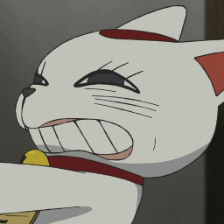

Bienvenido, ¡te deseo un buen trabajo!

8 de Diciembre de 2024
Estaba aburrrido y decidí crear este sitio web con la intención de entretenerme un rato y al mismo tiempo sin dejar oxidar mis habilidades en HTML, CSS y JavaScript.
10 de Diciembre de 2024
Hola. El 9 de Diciembre no hice nada porque se me dificultó seguir el itinerario. Hoy jugaré un poco con Css y JavaScript ( al final nunca toqué el archivo script)
17 de Diciembre de 2024
Esta es en realidad como la cuarta vez que practico en esta web. Simpre lo olvido. La vez pasada olvidé este apartado, por eso no hice los apuntes. Me gustaría crear una Función bien cool con JavaScript. Aquí seguiremos con la página de animes y le podremos más CSS.
18 de Diciembre de 2024
Holas. Estoy muy aburrido en casa, hacer esto es más divertido que navegar por los shorts de youtube por 1 hora. Hoy solo crearé el contenido dentro de los div de los animes ya que solo es copiar y pegar más la imagen. Tal vez haga que funcione el botón con JavaScript.